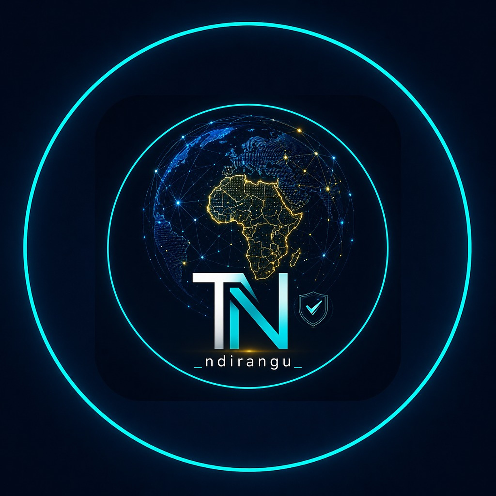

Product minded
I know where products break. Now I'm building better ones.
Hey there, Teresa Ndirangu here. I'm a Technical Product Manager with a sharp eye for how products break, and an even sharper instinct for how they should work. Across telecom, fintech and healthtech, I've learned to see failures before they happen. Now I'm bringing that lens into Product Management.
1,500+
users, in under three months. I took AmbiaPay from discovery to launch.
About 45%
more click-throughs to the eSIM page, after I found out why nobody was opening it.
670+
patient files scanned and migrated into Kenyatta's EDMS on schedule, leading a team of about 30.
What I do, again and again
I find where a product is failing, work out why with evidence, change it, and check that it worked.
01Finding the real problemMixpanel funnels, Google Play console and Appstore reports, Firebase Crashlytics, app reviews by users on stores and social media - you name it.
02Shipping with evidenceRequirements, acceptance criteria and release calls I'm willing to put my name on.
03Testing that holds upMobile and API automation in Java, Appium, TestNG and Postman, with a person reviewing before every release.
04Working across peopleEngineers, payment partners, vendors and hospital teams.